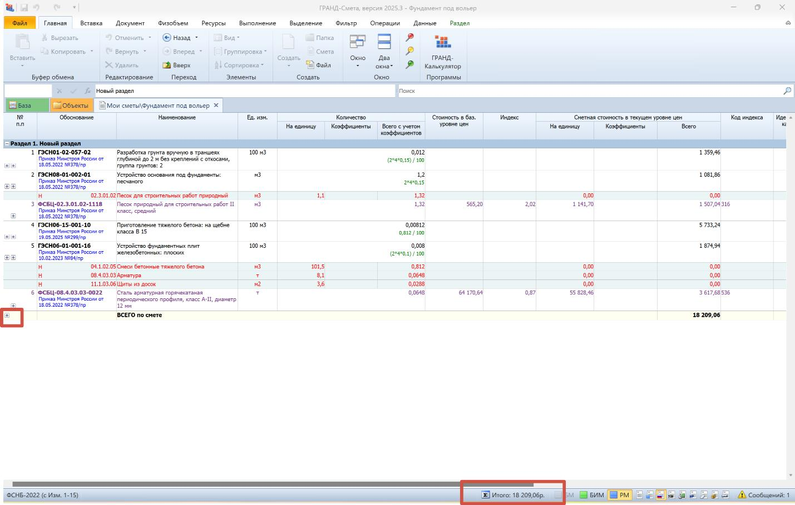
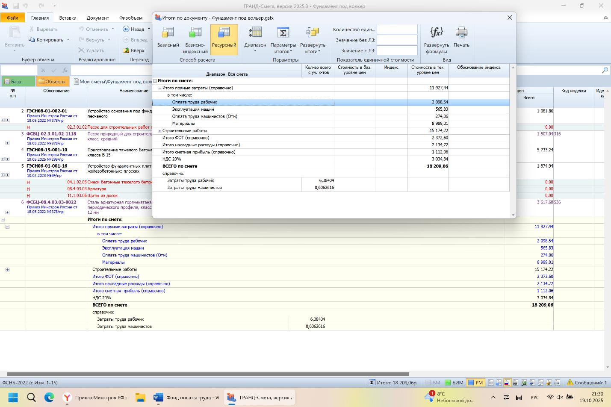
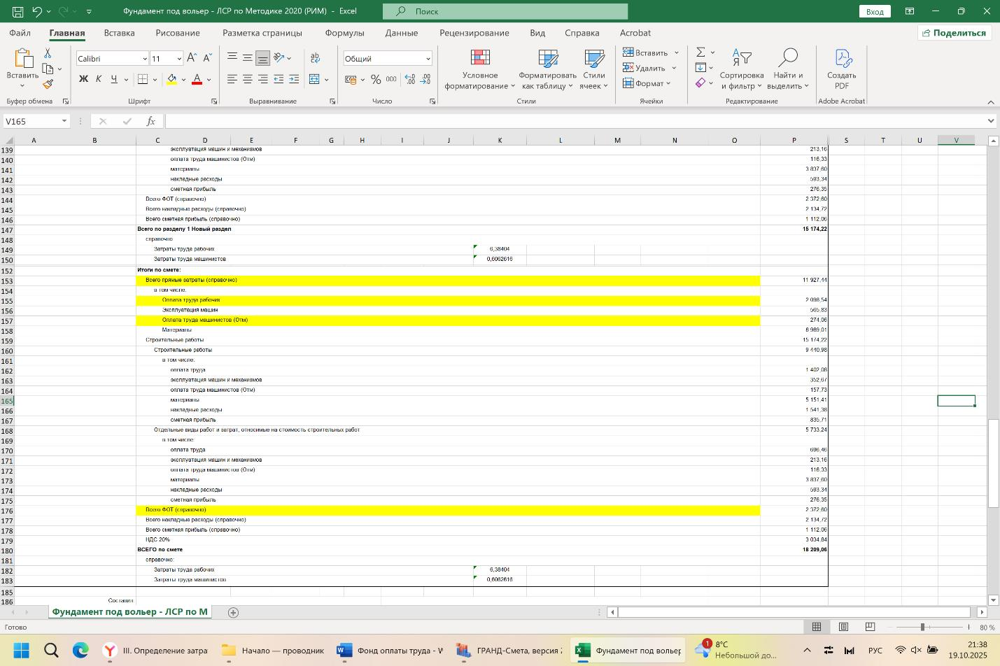
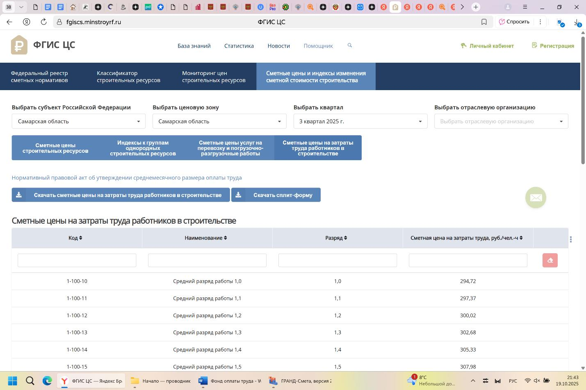

Средства на оплату труда и фонд оплаты труда (ФОТ)

Что такое Фонд оплаты труда (ФОТ)
ФОТ — это объем денежных средств, необходимый для оплаты труда за единицу выполненной работы. В сметных расценках учитываются время и средний разряд работ, необходимые в идеальных условиях для выполнения работы.
Если условия ухудшают производительность (стесненность, вредность и др.), применяются специальные коэффициенты.
ФОТ включает оплату труда рабочих и механизаторов, но зарплата механизаторов уже включена в стоимость машино-часа, поэтому отдельно не выделяется.
ФОТ нужен не только для расчета оплаты труда, но и для определения накладных расходов и сметной прибыли (процент от ФОТ).
НДФЛ учитывается в стоимости одного человеко-часа.
Количество разрядов расширено: теперь для рабочих — 8, для машинистов — 10.
О чем нам говорит нормативная документация
Пункт 2 приказа от 1 июля 2022 г. № 534/пр утверждает методику определения сметных цен на трудозатраты в строительстве.
Государственное учреждение под Минстроем, ведущее федеральную систему ценообразования (ФГИС ЦС), ежеквартально устанавливает расценки на трудозатраты по регионам.
Расценки основаны на средних ставках оплаты труда рабочих первой квалификации, опубликованных в ФГИС ЦС, с учетом тарифной системы оплаты согласно статье 143 Трудового кодекса РФ и постановлению Правительства РФ № 959 от 23.09.2016.
Это значит, что актуальная стоимость одного человеко-часа доступна в системе в зависимости от региона и квартала выполнения работ.
Где посмотреть ФОТ в смете:

Нажимаем на «+» или дважды щелкнем по Итого:

Где смотреть, если смету делали не мы и нам ее предоставили в Excel формате:

Где смотреть стоимость 1 чел-часа во ФГИС ЦС в зависимости от квартала и региона:
